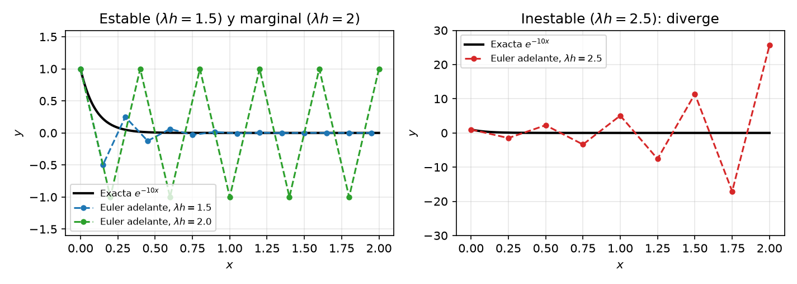
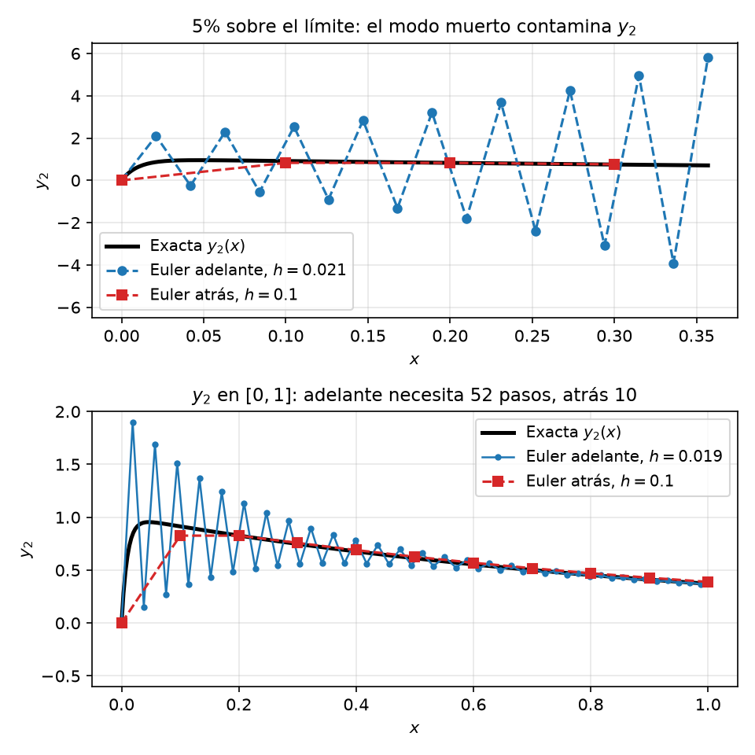

Un esquema numérico es estable si las pequeñas perturbaciones (redondeo, errores en los datos) no se amplifican sin límite a medida que avanza el cálculo. En Euler hacia adelante la estabilidad depende del tamaño de paso \(h\) en relación con la dinámica de la EDO. Si \(h\) es demasiado grande, la solución numérica puede oscilar y diverger aunque la exacta decaiga a cero.
\[y' = -\lambda y, \quad \lambda > 0, \quad y(0) = y_0\]
con solución exacta \(y(x) = y_0\, e^{-\lambda x}\), que decae monótonamente a \(0\).
Sustituyendo \(f = -\lambda y\) en la actualización \(y_{n+1} = y_n + h\,f(x_n, y_n)\):
\[y_{n+1} = y_n + h(-\lambda\,y_n) = y_n(1 - \lambda h)\]
La recurrencia es geométrica, de factor \(1 - \lambda h\):
\[y_n = y_0\,(1 - \lambda h)^n\]
La solución exacta tiende a \(0\), así que exigimos lo mismo a la numérica, es decir, \(\lim_{n \to \infty} y_n = 0\). Una sucesión geométrica \(a^n\) tiende a \(0\) si y solo si \(|a| < 1\):
\[|1 - \lambda h| < 1 \iff -1 < 1 - \lambda h < 1 \iff 0 < \lambda h < 2\]
La cota inferior es automática (\(\lambda > 0\), \(h > 0\)); la superior da la condición de estabilidad:
\[\boxed{h < \frac{2}{\lambda}}\]
| Régimen | Factor de amplificación | Comportamiento de \(y_n\) |
|---|---|---|
| \(0 < \lambda h \le 1\) | \(0 \le 1 - \lambda h < 1\) | Decae monótonamente a \(0\) (en \(\lambda h = 1\) llega en un paso) |
| \(1 < \lambda h < 2\) | \(-1 < 1 - \lambda h < 0\) | Decae a \(0\) pero oscila de signo en cada paso |
| \(\lambda h = 2\) | \(-1\) | Oscila con amplitud constante (marginal) |
| \(\lambda h > 2\) | \(|1 - \lambda h| > 1\) | Inestable: oscila y crece, \(y_n \to \infty\) |
Si \(h > 2/\lambda\) la solución numérica diverge aunque la verdadera decaiga — un artefacto de la discretización, no de la física de la EDO.

Euler hacia atrás evalúa la pendiente en el punto siguiente: \(y_{n+1} = y_n + h\,f(x_{n+1}, y_{n+1})\). Con \(f = -\lambda y\), el valor buscado \(y_{n+1}\) aparece en ambos lados; despejando:
\[y_{n+1} + \lambda h\,y_{n+1} = y_n \implies y_{n+1}(1 + \lambda h) = y_n\]
De nuevo una recurrencia geométrica:
\[y_n = \frac{y_0}{(1 + \lambda h)^n}\]
Como \(\lambda h > 0\),
\[0 < \frac{1}{1 + \lambda h} < 1\]
para todo paso positivo, y por tanto \(y_n \to 0\) siempre. Euler hacia atrás es incondicionalmente estable. Esto no significa que un paso grande sea preciso; solo que no produce crecimiento espurio.
Este análisis es el de la estabilidad absoluta, donde los valores de \(\lambda h\) para los que una perturbación no crece forman la región de estabilidad del método. En el eje real, con la convención de este capítulo (\(y' = -\lambda y\), \(\lambda > 0\)):
| Método | Intervalo estable |
|---|---|
| Euler adelante | \(0 < \lambda h < 2\) |
| Euler atrás | todo \(\lambda h > 0\) |
| RK4 | \(\lambda h \lesssim 2.78\) |
Con la convención \(y' = \lambda y\) con \(\operatorname{Re}\lambda < 0\) —la de Runge–Kutta— estos intervalos se leen \(-2 < h\lambda < 0\), \(h\lambda < 0\) y \(-2.78 \lesssim h\lambda < 0\). Euler atrás cubre todo el semiplano izquierdo (es A-estable). La misma noción reaparece como la condición \(r \le \tfrac{1}{2}\) de FTCS en Parabólicas.
| Propiedad | Euler adelante (explícito) | Euler atrás (implícito) |
|---|---|---|
| Actualización | \(y_{n+1} = y_n + h\,f(x_n, y_n)\) | \(y_{n+1} = y_n + h\,f(x_{n+1}, y_{n+1})\) |
| Factor de amplificación | \(1 - \lambda h\) | \(\dfrac{1}{1 + \lambda h}\) |
| Estabilidad | Condicional: \(h < \dfrac{2}{\lambda}\) | Incondicional |
| Coste por paso | Bajo: una evaluación de \(f\) | Mayor: resolver una ecuación para \(y_{n+1}\) |
| Con \(h\) grande | Oscila y diverge | Decae monótonamente (quizá demasiado rápido) |
El compromiso es estabilidad vs. coste. Euler hacia atrás no tiene techo de paso, pero cada paso exige resolver una ecuación (o un sistema). Euler adelante se evalúa directamente, a cambio de limitar \(h\).
Un sistema de EDO es rígido (stiff) cuando conviven dinámicas en escalas temporales muy separadas. Conviven los modos rápidos que decaen en seguida y los modos lentos que gobiernan el largo plazo. Un integrador explícito se ve obligado a dar pasos diminutos solo para mantener estables los modos rápidos, mucho después de que estos hayan desaparecido.
La cadena de reacciones de primer orden \(y_1 \xrightarrow{k_1} y_2 \xrightarrow{k_2} y_3\) con \(k_1 = 100 \gg k_2 = 1\) es el modelo más simple con dos escalas. El reactivo \(y_1\) se consume en \(\sim 10^{-2}\) y el intermediario \(y_2\) se acumula de forma transiente para luego decaer en escala \(\sim 1\). Las velocidades con las que cambian las concentraciones \(y_1\) e \(y_2\) son:
\[y_1' = -100\,y_1, \qquad y_2' = 100\,y_1 - y_2, \qquad y_1(0) = 1, \quad y_2(0) = 0\]
La solución exacta de estas ecuaciones es \(y_1(x) = e^{-100x}\) e \(y_2(x) = \frac{100}{99}\left(e^{-x} - e^{-100x}\right)\). La concentración \(y_2\) es una sola función que contiene los dos modos que sube rápidamente hasta \(\approx 0.95\) en \(x \approx 0.05\) y después decae lentamente como \(e^{-x}\).
Euler adelante aplicado al sistema da
\[y_{1,n+1} = (1 - 100h)\,y_{1,n}, \qquad y_{2,n+1} = (1 - h)\,y_{2,n} + 100h\,y_{1,n}\]
La primera recurrencia es la escalar ya estudiada y es estable solo si \(|1 - 100h| < 1\), es decir \(h < 0.02\). Y si ese factor supera 1 en módulo, la explosión no se queda en \(y_1\), el término \(100h\,y_{1,n}\) de la segunda ecuación la inyecta en \(y_2\). La regla general es que en un sistema la condición de estabilidad debe cumplirla cada modo presente, así que la estabilidad la dicta el modo más rápido \(h < 2\times 10^{-2}\), esto es, \(\sim 50\) pasos para llegar a \(x = 1\) y \(\sim 500\) para \(x = 10\).
La precisión en \(y_2\) pediría \(h \approx 0.02\) (error del \(\sim 1\%\)), lo que es apenas el techo de estabilidad, y con un \(k_1\) mayor el techo caería muy por debajo de lo útil. El tamaño de paso lo fija la estabilidad, no la precisión.
Euler hacia atrás da
\[y_{1,n+1} = \frac{y_{1,n}}{1 + 100h}, \qquad y_{2,n+1} = \frac{y_{2,n} + 100h\,y_{1,n+1}}{1 + h}\]
con factores \(1/(1+100h)\) y \(1/(1+h)\), ambos menores que \(1\) para cualquier \(h > 0\). No hay techo de estabilidad, así que el paso se elige solo por criterios de precisión. Con \(h = 0.1\) —cinco veces el límite de adelante— \(y_1\) muere en un paso y \(y_2\) sigue a la exacta con un error de unos pocos % en solo 10 pasos. El coste extra de despejar las ecuaciones implícitas (aquí trivial, primero \(y_{1,n+1}\), luego \(y_{2,n+1}\) por sustitución) queda muy compensado por la reducción del número de pasos.

| Régimen | Integrador recomendado | Por qué |
|---|---|---|
| No rígido, suave | RK explícito (p. ej. RK45) | Barato por paso, sin resolución de ecuaciones |
| Rígido | Métodos implícitos (Euler atrás, RK implícitos, BDF) | Sin techo de estabilidad; el paso lo fija la precisión |
La pregunta diagnóstica es simple: ¿el tamaño de paso lo fija la precisión o la estabilidad? Si se necesita un paso diminuto solo para evitar que un modo rápido ya extinguido diverja, el problema es rígido y un método implícito se amortiza con creces.
Comprueba tu comprensión. Para \(y' = -50y\), ¿a partir de qué valor de \(h\) se vuelve inestable Euler adelante? ¿Qué le ocurre a la solución numérica con \(h = 0.05\): diverge, decae monótonamente o decae oscilando?